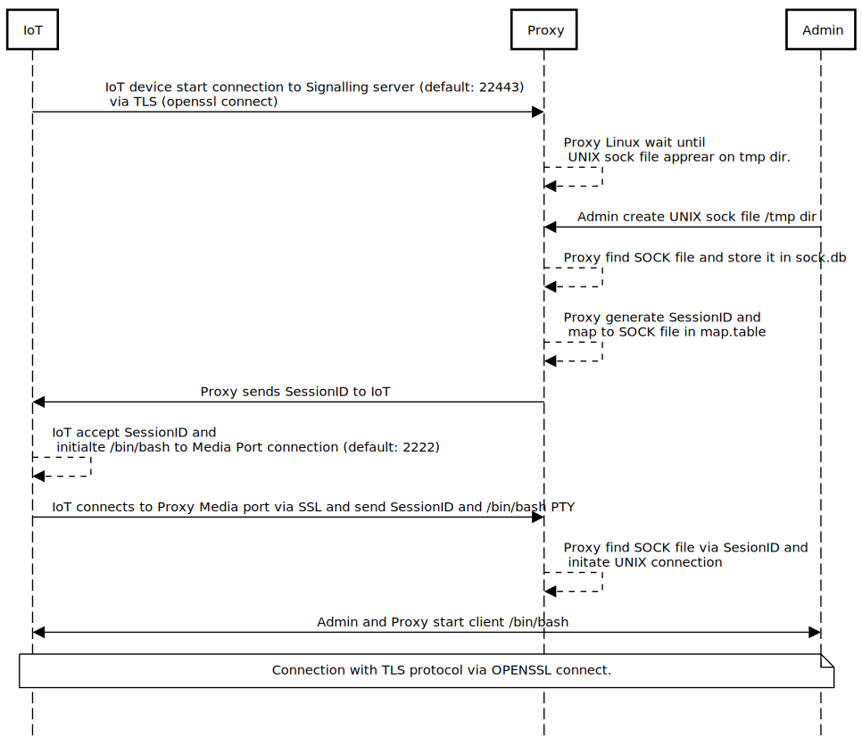

Get Started
How it works
Installation Server
$ sudo apt-get install make socat
$ git clone https://github.com/aze2201/shell_sockV2.git
$ cd shell_sockV2
$ make server
Installation Client IoT
$ sudo apt-get install make socat
$ git clone https://github.com/aze2201/shell_sockV2.git
$ cd shell_sockV2
$ make client
Configuration
Create cryptographic keys with OpenSSL
$ # private key
$ openssl genrsa -out server.key 4096
$ # Certificate Request for CA
$ openssl req -new -key server.key -out server.csr
You are about to be asked to enter information that will be incorporated
into your certificate request.
What you are about to enter is what is called a Distinguished Name or a DN.
There are quite a few fields but you can leave some blank
For some fields there will be a default value,
If you enter '.', the field will be left blank.
-----
Country Name (2 letter code) [AU]:AZ
State or Province Name (full name) [Some-State]:Baku
Locality Name (eg, city) []:Baku
Organization Name (eg, company) [Internet Widgits Pty Ltd]:SysEng
Organizational Unit Name (eg, section) []:Open Source Team
Common Name (e.g. server FQDN or YOUR name) []:proxy-linux.az
Email Address []:
Please enter the following 'extra' attributes
to be sent with your certificate request
A challenge password []:
An optional company name []:
$
$ cat server.csr
-----BEGIN CERTIFICATE REQUEST-----
MIIEtTCCAp0CAQAwcDELMAkGA1UEBhMCQVoxDTALBgNVBAgMBEJha3UxDTALBgNV
BAcMBEJha3UxDzANBgNVBAoMBlN5c0VuZzEZMBcGA1UECwwQT3BlbiBTb3VyY2Ug
...
-----END CERTIFICATE REQUEST-----
• Repeat certificate creation process for Client IoT devices
• Get signed certificate from CA and store in /etc/shell_sock/server/certs and /etc/shell_sock/client/certs accordingly
Setup Server config file
$ sudo vi /etc/shell_sock/server/config/server.conf
KEY=/etc/shell_sock/server/certs/server.key
# SIGNED PUBLIC KEY X509
CERT=/etc/shell_sock/server/certs/server.crt
# CA public key chain
CA_CERT=/etc/shell_sock/server/certs/ca-chain.crt
# SERVER LISTEN PORT
PORT=22444
# MEDIA (/bin/bash) PORT
MEDIA_PORT=2222
# TEMP FOLDER
TEMP=/tmp/shell_sock
# LOG FOLDER
LOG_PATH=/var/log/shell_sock
Setup Client config file
$ sudo vi /etc/shell_sock/client/config/client.conf
# private key
KEY=/etc/shell_sock/client/certs/client.key
# SIGNED PUBLIC KEY X509
CERT=/etc/shell_sock/client/certs/client.crt
# CA public key chain
CA_CERT=/etc/shell_sock/client/certs/ca-cert.crt
# SERVER IP address or DOMAIN
# please not that, domain name should match with certificate DNS information
SERVER=Proxy domain
# SERVER PORT FOR SIGNALLING
PORT=22444
# SERVER PORT FOR /bin/bash MEDIA
MEDIA_PORT=2222
# LOGGING
LOG_PATH=/var/log/shell_sock
# TEMP DIR
TEMP=/tmp/shell_sock
Start server proxy
$ sudo systemctl restart shell_sock_server
Start Client IoT
$ sudo systemctl restart shell_sock_client
| Options | Value | Default |
|---|---|---|
| encryption | Using TLS connection | true |
| re-Configurable | Always configuration can be adjusted via static conf or input argument | true |
| Authentication | All devices are signed by CA. | true |
Manual start server
$ ./shell_sock_server.sh --help
Loading configuration...
Configurations are loaded !
To share accept terminal PTY requires certificates wich is signed by any CA
Generate private key: root@shell_sock:~\# openssl genrsa -out certs/server.key 4096
Generate CSR key: root@shell_sock:~\# openssl req -new -key certs/server.key -out certs/server.csr
Send CSR file to CA and obtain signed PEM or CRT file and store certs folder (x509)
Get CA public key chain
{-k|--key } private key -- Set prvate key or root@shell_sock:~# export KEY=
{-c|--cert } public key -- Set public key or root@shell_sock:~# export CERT=
{-C|--ca-cert } CA file -- Set CA public key or root@shell_sock:~# export CA_CERT=
{-p|--port } PORT -- Set signalling port or root@shell_sock:~# export PORT=
{-m|--media-port } MEDIA_PORT -- Set media port or root@shell_sock:~# export MEDIA_PORT=
{-t|--temp } TEMP -- Set TEMP folder or root@shell_sock:~# export TEMP=
{-l|--log } LOG_PATH -- Set LOG folder or root@shell_sock:~# export LOG_PATH=
{-d|--debug } DEBUG leve from 1 to 3
$
$ shell_sock_server.sh -k server.key -c server.crt -C ca-chain.crt -p 22447 --media-port 2223 -t /tmp/tempor -l /var/log/shell_sock/ --debug 2
Loading configuration...
Configurations are loaded !
/usr/bin/socat -d -d
SIGNALLING SERVER START 0.0.0.0:22447
SIGNALLING SERVER START 0.0.0.0:2223
2024/01/07 17:22:58 socat[3837061] N listening on AF=2 0.0.0.0:2223
2024/01/07 17:22:58 socat[3837062] N listening on AF=2 0.0.0.0:22447
Manual start client
$ ./shell_sock_client.sh --help
Loading configuration
Configurations are loaded
To share terminal to server requires certificates wich is signed by any CA
Generate private key: root@shell_sock:~\# openssl genrsa -out certs/server.key 4096
Generate CSR key: root@shell_sock:~\# openssl req -new -key certs/server.key -out certs/server.csr
Send CSR file to CA and obtain signed PEM or CRT file and store certs folder (x509)
Get CA public key chain
{-k|--key } private key -- Set prvate key or root@shell_sock:~# export KEY=
{-c|--cert } public key -- Set public key or root@shell_sock:~# export CERT=
{-C|--ca-cert } CA file -- Set CA public key or root@shell_sock:~# export CA_CERT=
{-p|--port } PORT -- Set listen port or root@shell_sock:~# export PORT=
{-s|--server } SERVER -- Set server ip|domain or root@shell_sock:~# export SERVER=
{-m|--media-port } MEDIA_PORT -- Set port for bash or root@shell_sock:~# export MEDIA_PORT=
{-t|--temp-dir } TEMP -- Set tmp dir or root@shell_sock:~# export TEMP=
{-l|--log } LOG_PATH -- Set LOG directory or root@shell_sock:~# export LOG_PATH=
{-d|--debug } DEBUG leve from 1 to 3
$
$ ./shell_sock_client.sh -s proxy.com -p 22447 --media-port 2223 -k client.key -c client.crt -C ca-cert.crt -t /tmp/shell_sock -l /var/run/shell_sock
Loading configuration
Configurations are loaded
..Startging to connect to: proxy:22447
Connect to IoT
$ ssh -t root@proxy.com "socat UNIX-LISTEN:/tmp/shell_sock/raspery-IoT/fariz.sock -",raw,echo=0
bash: cannot set terminal process group (12785): Inappropriate ioctl for device
bash: no job control in this shell
root@raspery-IoT:/#
Issues
Project is very new. I will appreciate to report any issues or PR
You can contact me over ...
Linkedin
Medium
X | Twitter